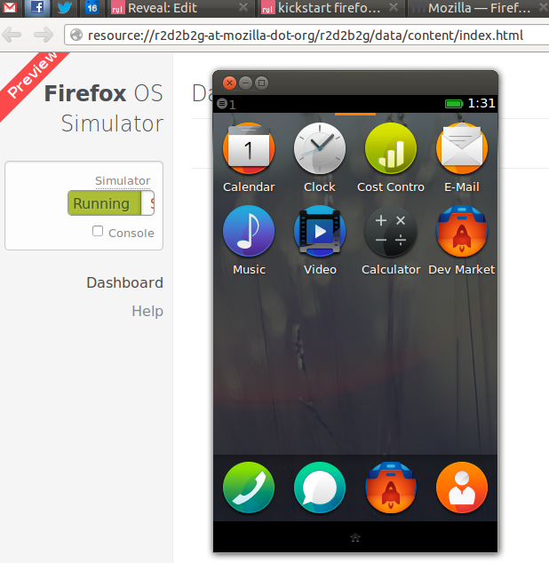
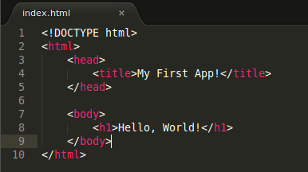
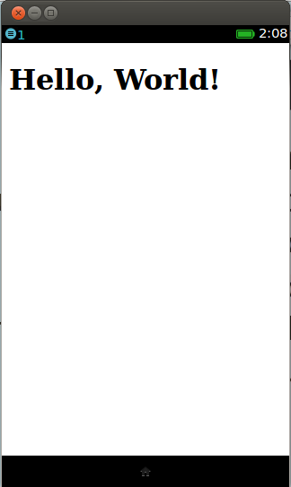
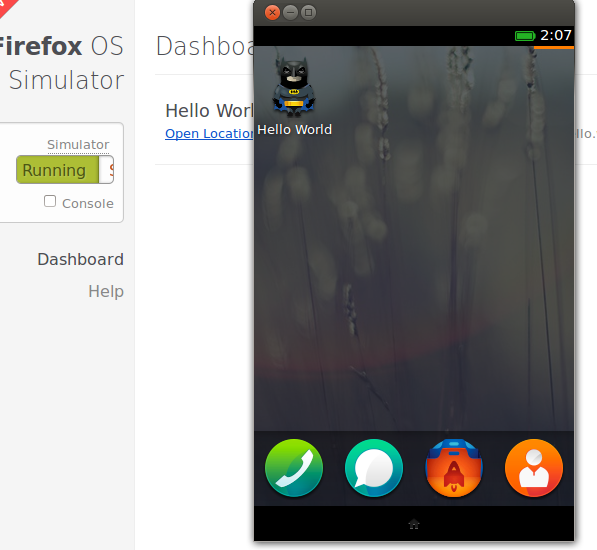
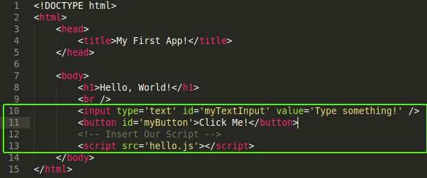
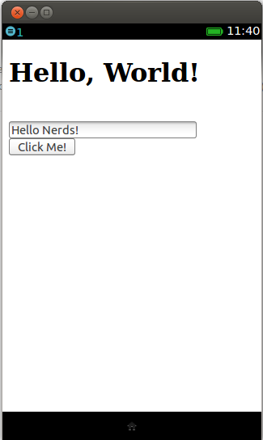
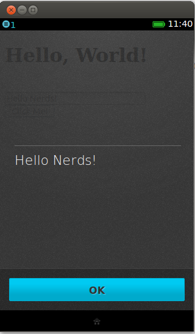
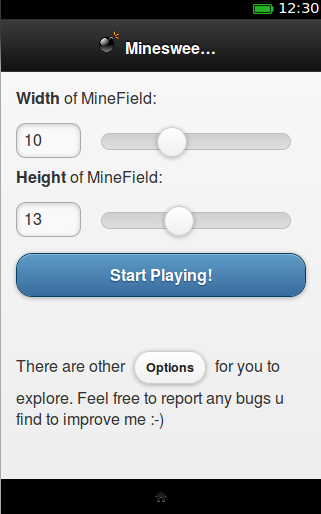
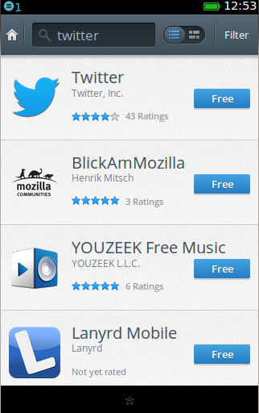

Kickstarting
app
development
Use Left & Right arrows for page navigation
Yes you can!
You can start building apps right now, if...
- You know HTML basics
- You know basics of JavaScript
- You have some idea with CSS
- You can press the RIGHT arrow
Seriously, to go to the next slide!
Contents
- Intro
- Organization
- Tools you'll need
- Hello, World
- Tips & Tricks
1. Intro
Probably you already know about , note that it's not Firefox the browser... it's a brand new OS for mobile platforms.
We're interested in building apps which runs in devices with
It's already live!


2. Organization
of Apps
To develop any application, we worry about two things...
(next slides)
User Interface
Pages, Forms, Buttons, sliders...
& Controls!
Logic programming, loops, working with data etc...
Organization
While building apps, we
- build user interface with HTML & CSS
- & Javascript does the programming!
Philosophy
And since HTML/CSS/JavaScripts are standards, these apps run not only in devices, but on any device that have a browser!!! (Yes, on your Android too*)
Don't misunderstand web apps - they run offline, too!
* Some APIs don't work in all browsers.
Let's Start!
3. Tools
- Any text editor (to write code)
- Latest Firefox browser (to see output!)
Optionally (highly recommended):
-
Simulator Addon
-
Firebug (for debugging)
Text Editor
Any text editor will work. We'll be making following types of files:
- HTML (.html)
- JavaScript (.js)
- CSS (.css)
You can use Sublime, Notepad++, Netbeans, Eclipse or even the basic editor which comes with your OS.
Firefox Browser
To see the complete functionality of your app, we'll use Firefox Browse - the desktop browser we all love.
We'll open the HTML files with our browser.
Firefox OS Simulator
It's an addon for Firefox browser, install the addon and simulate in your desktop!
Finally, Firebug helps us debugging HTMLs & JavaScripts, so install this addon too.

Hello, World!
It's time for a "Hello World" app, right now!
Step 1: Create a directory named hello
Create a directory named hello anywhere in your computer.
This will be the base directory - we put all files of our app here.
Step 2: Create file named index.html
Create a file index.html (it doesn't need to be index.html, it could be any name with .html extention) in the hello directory.

See it in your browser
Open the index.html file with your Firefox Browser. You can double-click or right-click then open with Firfox.
Because, we've not taken care of screen size & others.
TIPS
To test mobile screens with various sizes, press Control + Shift + M in your Firefox!
Pressing ctrl + shft + M gives a mobile app look-&-feel!
Step 3: Create Manifest file
All Firefox OS apps need a manifest file. The manifest file tells the app's name, description, permissions it requires and some other basic settings.
Manifest file can have any name, but it should have .webapp extension.
We create hello.webapp file (note the .webapp extention) in hello directory:

Install app in the simulator!
Open the Simulator from:
Tools > Web Developer > Simulator
Click on "Add Directory"
Select the hello.webapp file you've just created
Bingo! Simulator will start with our app!
App in Firefox OS Simulator


More Fun: Add some scripts
We will add a text input box and a button in our simple app.
When user clicks button, an alert box with the text in the input field will be shown.
Change the index.html file
to add the input elements

Create a file named hello.js
inside your project directory
// Reference UI elements
var button = document.getElementById('myButton');
var txtInput = document.getElementById('myTextInput');
// Bind click event of the button with an event listener
button.addEventListener('click', function(){
var text = txtInput.value;
// Show alert box with this text
alert(text);
})
 
Congratulations!
You have created your first app!
Tips & Tricks
Do we need to use the Simulator?
Not really. You can test your app using the Firefox Browser. I can test all the functionalities almost, using the browser & mobile view. So each time you update your app you can test by just refreshing the browser.
Using Frameworks
To give your app a mobile application like look and feel, you can use many frameworks.
jQuery Mobile is a cool framework, which turns your HTML stuffs into cool mobile app!
Also handle mobile input events like tap, long tap, swipe etc!
Using jQuery Mobile

Cool, right? learning jQuery Mobile is very easy!
See a video tutorial on building an app in 6 minutes using jQuery Mobile by Aniruddha, you won't regret this!
Also has a drag & drop interface to build UI!
Publishing your app
Once you've completed your app, you need to upload it in a server, and share the link.
Firefox Marketplace

You can submit your app in the Firefox Marketplace for more publicity!
Sign in to Marketplace Developer Hub & follow the instructions!
Docs
Mozilla Developer Network (MDN)
MDN Will be your one-stop center for docs. You may also check out:
- HTML5
- JavaScript
- CSS Docs
Demos
Apps Showdown
Need inspiration? See some cool apps in action in the Demo Studio. You may also try the Markeplace from Simulator.
Thank You
@ishafiul: Author of this presentation. Shafiul Azam is a Mozilla Rep, OpenSource enthusiast.
This presentation can be viewed online from:
shafiul.github.com/slides
Or, a poor quality PDF version.
References
- http://media.smashingmagazine.com/images/data-visualization/infosthetics02.jpg
- http://www.deltacad.com/sample/gears.gif
- http://www.websiteinabox.com/presscenter/images/dragon_thinking_small.gif
- http://www.iconspedia.com/icon/batman-icon-37891.html